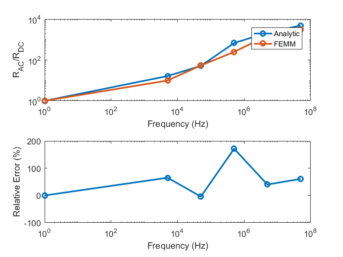

Example DC-DC Analytic
Problem description
The following problem addresses the optimization of an output inductor in a DC-DC buck converter as shown in the figure below. This time however, the excitations of the inductors will be determined by an analytical waveform previously known or will be calculated using an analytical calculation.

Optimization using an analytical waveform
In the previous system, let us suppose we want to design an inductor of 1.3mH. By analytical approximations of a classical DC-DC converter, we know that the low voltage DC current is and the current ripple is determined by the following equation:
with the following parameters:
- E : High DC voltage
- α : transformation ratio
- fsw : the switching frequency
- L : the inductor value
The waveform is the following one
Idc = 5; deltaI = 1; fSw = 20e3; timeSignal = linspace(0,1/fSw,1000); valueSignal = Idc + deltaI * Signal.Triangle(2 * pi * fSw * timeSignal); plot(timeSignal,valueSignal);
The voltage at the terminals can be approximated to a square waveform
voltageSignal = 50*square(2*pi*fSw*timeSignal,50); plot(timeSignal,voltageSignal);
The inductor and the problem is then created, in this case we will use the InductorCustomEI class, as no external solver is used, the record property is set to "false"
myOptProblem = OptimProblem.Optimizer;
myInductor = Comp3d.InductorCustomEI('record',false);
myOptProblem.addComp3d(myInductor);
The inductor constraint value is set to 1.3mH as it is the valued we will have in the optimization process and the air temperature is set at 30
myInductor.constraints.Leq = 1.3e-3; myInductor.excitations.thermal.tAir = 30;
Then the excitations of the inductor are added analytically/p>
myInductor.setExcitations('time',timeSignal,'current',valueSignal,'voltage',voltageSignal); myInductor.drawExcitations;
The optimization is launched, in this case, the objective function is the mass and the MATLAB fmincon function is used
myOptProblem.criteria = {'mass'};
myOptProblem.optimAlgoType = 'GradientDescent';
myOptProblem.optimAlgo.options.Display = 'final';
myOptProblem.solveOptimizationProblem;
Converged to an infeasible point. fmincon stopped because the size of the current step is less than the selected value of the step size tolerance but constraints are not satisfied to within the selected value of the constraint tolerance. Unsuccessful optimization. Exit flag = -2. No feasible point found.
The optimal solutions are displayed and validated
myInductor.displayInformation; myInductor.drawComponent; myInductor.validateFEMM;
====================================================
Information of [Comp3d.InductorCustomEI]
----------------------------------------------------
Shape
Dimensions
legWidth: 0.01008
legThickness: 0.02021
airGap: 0.000277
windingCoreDistance: 0.0006
interTurnSpace: 0.0001
nTurns: 8.307
conductorWidth: 0.0009774
conductorHeight: 0.02942
----------------------------------------------------
Materials
electricConductor: Copper
electricInsulation: UPETS
magneticCore: 3C90 TM(25-200kHz)
----------------------------------------------------
Geometric Data
Manufacturing Volume: 0.12 l
Weight: 0.4957 Kg
----------------------------------------------------
Cost Data
Total: $ 0.00
----------------------------------------------------
Optimization Constraints
temperatureMax: 80
BsatRate: 0.95
Leq: 0.0013
----------------------------------------------------
Electric Parameters
Inductance: 5.858e-05 H
DC resistance: 0.0005905 Ohm
----------------------------------------------------
Output data
Current Dc: 5 A
Current Max: 5.999 A
Current RMS: 5.033 A
Current Ripple: 1.998 A
Current Density: 0.175 A/mm²
Joules losses: 0.04618 W
B Max: 0.1038 Tesla
Core losses: 0.005929 W
Temperature: 30.61 °C
====================================================
FEMM analysis started... Elapsed time is 5.758644 seconds.
FEMM analysis started... Elapsed time is 5.180982 seconds.
FEMM analysis started... Elapsed time is 5.207942 seconds.
FEMM analysis started... Elapsed time is 5.710865 seconds.
FEMM analysis started... Elapsed time is 6.948994 seconds.
FEMM analysis started... Elapsed time is 8.514614 seconds.
====================================================
Validation of [Comp3d.InductorCustomEI]
----------------------------------------------------
rAC Factor
Rel. Mean Error: -3.144 %
----------------------------------------------------
L value
Rel. Mean Error: -7.386 %
----------------------------------------------------
Winding Losses
Analytic: 0.04618 W
FEMM: 0.04293 W
Rel. Error: 7.573 %
----------------------------------------------------
====================================================

Optimization using an analytical object
In some particular cases, we might know what is the waveform of the object depending on its value making some assumptions. For example, using the equations presented above we can know what is the output current as a function of the inductance value. The steps are the same, first the inductor and the optimization problem are created
myInductor = Comp3d.InductorCustomEI('record',false);
myOptProblem = OptimProblem.Optimizer();
myOptProblem.addComp3d(myInductor);
Then the inductor object is "coupled" with the "exctation" object that will give the excitations values as function of the inductance value. In this case the excitation object is called "InductorExcitation" and it is set in the excitationsElectricAnalytic field
myInductor.excitationsElectricAnalytic = AnalyticalExcitation.InductorExcitation;
The excitation object is set according to our paricular problem
myInductor.excitationsElectricAnalytic.vHv = 100; myInductor.excitationsElectricAnalytic.vLv = 50; myInductor.excitationsElectricAnalytic.iDc = 5; myInductor.excitationsElectricAnalytic.fSw = 20e3; myInductor.excitationsElectricAnalytic.nSample = 1000; myInductor.drawExcitations();
We set the optimization constraints
myInductor.constraints.Leq = 1.3e-3; myInductor.excitations.thermal.tAir = 30;
The same fmincon algorithm options and objective are set.
myOptProblem.criteria = {'mass'};
myOptProblem.optimAlgoType = 'GradientDescent';
myOptProblem.optimAlgo.options.Display = 'final';
myOptProblem.solveOptimizationProblem;
Local minimum found that satisfies the constraints. Optimization completed because the objective function is non-decreasing in feasible directions, to within the selected value of the optimality tolerance, and constraints are satisfied to within the selected value of the constraint tolerance. Successful optimization! Exit flag = 1. First order optimality conditions satisfied.
The optimal solutions are displayed and validated
myInductor.displayInformation; myInductor.drawComponent; myInductor.validateFEMM;
====================================================
Information of [Comp3d.InductorCustomEI]
----------------------------------------------------
Shape
Dimensions
legWidth: 0.006084
legThickness: 0.04404
airGap: 0.0004014
windingCoreDistance: 0.0006
interTurnSpace: 0.0001
nTurns: 40
conductorWidth: 0.000106
conductorHeight: 0.009578
----------------------------------------------------
Materials
electricConductor: Copper
electricInsulation: UPETS
magneticCore: 3C90 TM(25-200kHz)
----------------------------------------------------
Geometric Data
Manufacturing Volume: 0.06071 l
Weight: 0.2185 Kg
----------------------------------------------------
Cost Data
Total: $ 0.00
----------------------------------------------------
Optimization Constraints
temperatureMax: 80
BsatRate: 0.95
Leq: 0.0013
----------------------------------------------------
Electric Parameters
Inductance: 0.0013 H
DC resistance: 0.09975 Ohm
----------------------------------------------------
Output data
Current Dc: 5 A
Current Max: 5.482 A
Current RMS: 5.008 A
Current Ripple: 0.9635 A
Current Density: 4.934 A/mm²
Joules losses: 2.729 W
B Max: 0.3325 Tesla
Core losses: 0.0148 W
Temperature: 80 °C
====================================================
FEMM analysis started... Elapsed time is 5.360516 seconds.
FEMM analysis started... Elapsed time is 4.078052 seconds.
FEMM analysis started... Elapsed time is 3.680117 seconds.
FEMM analysis started... Elapsed time is 4.199146 seconds.
FEMM analysis started... Elapsed time is 5.301214 seconds.
FEMM analysis started... Elapsed time is 7.492691 seconds.
====================================================
Validation of [Comp3d.InductorCustomEI]
----------------------------------------------------
rAC Factor
Rel. Mean Error: 55.62 %
----------------------------------------------------
L value
Rel. Mean Error: -13.41 %
----------------------------------------------------
Winding Losses
Analytic: 2.729 W
FEMM: 2.72 W
Rel. Error: 0.3448 %
----------------------------------------------------
====================================================
